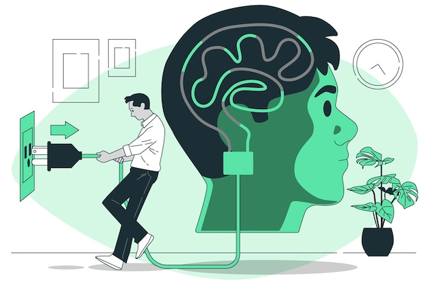

The brain's ability to reorganize itself by forming new neural connections throughout life, which can help recover from injury or adapt to new experiences.
Brain psychology, or neuropsychology, investigates the intricate relationship between brain structures and cognitive functions. It focuses on how different brain regions are responsible for specific abilities like memory, decision-making, and emotional regulation. The role of neurotransmitters, such as dopamine and serotonin, is crucial in understanding mood and cognitive processes. This field also examines how brain injuries or dysfunctions impact behavior, personality, and mental health. Neuroplasticity, the brain's ability to adapt and reorganize itself, is a key area of study, highlighting how the brain can recover from damage or adjust to new experiences. Additionally, brain psychology looks at brain development across the lifespan to understand learning and psychological disorders. By combining clinical assessments with advanced brain imaging techniques, neuropsychologists strive to enhance our understanding of cognitive and psychological health and improve treatment strategies.
The brain, our biological supercomputer, is a labyrinth of interconnected neurons. While we've made strides in understanding its functions, many puzzles remain. Conditions like Alzheimer's and Parkinson's offer stark reminders of the brain's vulnerability. Mental health disorders like depression and schizophrenia highlight the intricate dance between biology and psychology.
Advancements in neuroscience, such as neuroimaging and genetic research, are shedding light on brain structure and function. However, the complexities of consciousness, memory, and emotion continue to challenge scientists. A holistic approach, combining biological, psychological, and environmental factors, is essential to unraveling the brain's mysteries.
Ultimately, understanding the brain is crucial for developing effective treatments for neurological and psychiatric diseases. It's a journey of exploration that promises to revolutionize our understanding of ourselves and the world around us.
- The Neuroscience of Learning and Memory
- Feb 5, 2024
Neurodegenerative diseases progressively destroy brain cells, leading to cognitive decline, movement disorders, and other debilitating symptoms. Common examples include Alzheimer's, Parkinson's, and ALS. Currently, there's no cure, but research focuses on slowing progression and improving quality of life.Neurodegenerative diseases steadily destroy brain cells, causing memory loss, movement problems, and other severe symptoms. Examples include Alzheimer's and Parkinson's.